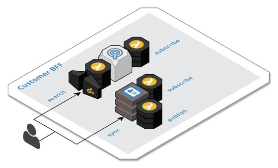

Example – Customer BFF
The efforts of authors and workers, in most cases, are ultimately directed towards the purpose of delivering capabilities to customers in a customer- specific user experience. The customer experience is usually delivered through multiple channels. To simplify this example, we will focus on the web channel, as the concepts are applicable to the other form factors.
Modern websites are built as a collection of multiple, mobile-first, single page applications that are delivered from the CDN. These frontend applications will typically include a home page application, a search application, a product application, a sign up application, a checkout application, and a customer account application. Each frontend application may be further decomposed into independently deployed micro-frontend applications that provide fragments to the parent application. As an example, the product application would interact with the checkout application to display the add-to-cart button on the page and the cart button on the banner. The details of modern user interface development, however, are not the purview of this book. Instead, we want to focus on how to carve out cloud-native backend components for modern frontend applications.
First and foremost, the customer experience is a different stage in the life cycle of the system's data. The requirements to scale the data to potentially millions of users versus hundreds or thousands of authors and workers are very different. As depicted in the following figure, Customer BFF components make heavy use of the CQRS and Offline-First Database patterns. Authored content, such as products, is replicated to a Search BFF where it is stored in a search engine as well as blob storage for the product details that are delivered via the CDN. The user's cart is owned by the Checkout BFF and stored in the offline-first database. An Account BFF owns the user's order history, which is a materialized view stored in the offline-first database, as well as the user's preferences and wish list, which are also stored offline-first.

Note that the frontend is composed of multiple independent pieces and thus the backend is as well. The team responsible for each frontend also owns the backend that supports it and the data as well. All data that is created or generated by the user is published downstream as well to further support the data life cycle. It is also important to recognize that each frontend application has it own security context in that some parts of the user experience require authentication while others do not. The security model of the backend should match that of its frontend. It is usually easier to reason about a single BFF when all its resources either require authentication or do not. Unintended security gaps can slip in when we mix and match security models.